Docker深入
Docker复杂安装
mysql主从复制
- 启动主库容器
docker run \
-p 3307:3306 \
--name mysql-master \
--privileged=true \
-v /ddocker/mysql-master/data:/var/lib/mysql \
-v /ddocker/mysql-master/conf:/etc/mysql/conf.d \
-v /ddcoker/mysql-master/mysql-files:/var/lib/mysql-files \
-e MYSQL_ROOT_PASSWORD=123456 \
-d mysql-
编辑配置 conf/my.cnf (！！！！！！)
注意！！！！
此处文档权限要改成 444/474（让orangepi:7来编辑，root:4来执行）
不能有空格！！！
[mysqld]
server-id=101
## 指定不需要同步的数据库名称
binlog-ignore-db=mysql
binlog-ignore-db=information_schema
binlog-ignore-db=performance_schema
## 开启二进制日志功能
log-bin=mall-mysql-bin
## 设置二进制日志使用内存大小（事务）
binlog_cache_size=1M
## 设置使用的二进制日志格式（mixed,statement,row）
binlog_format=ROW
## 跳过主从复制中遇到的所有错误或指定类型的错误，避免slave端复制中断。
## 如：1062错误是指一些主键重复，1032错误是因为主从数据库数据不一致
slave_skip_errors=1062- 重启
docker restart mysql-master- 进入主机容器
# 4.1进入mysql-master容器
docker exec -it mysql-master mysql -uroot -p123456
# 4.2创建数据同步用户
CREATE USER 'slave'@'%' IDENTIFIED BY '123456';
GRANT REPLICATION SLAVE, REPLICATION CLIENT ON *.* TO 'slave'@'%';
ALTER USER 'slave'@'%' IDENTIFIED WITH mysql_native_password BY '123456';
flush privileges;- 启动从机容器
docker run \
-p 3308:3306 \
--name mysql-slave \
--privileged=true \
-v /ddocker/mysql-slave/data:/var/lib/mysql \
-v /ddocker/mysql-slave/conf:/etc/mysql/conf.d \
-v /ddcoker/mysql-master/mysql-files:/var/lib/mysql-files \
-e MYSQL_ROOT_PASSWORD=123456 \
-d mysql-
编辑配置 conf/my.cnf
注意！！！！
此处文档权限要改成 444/474（让orangepi:7来编辑，root:4来执行）
不能有空格！！！
[mysqld]
server-id=102
## 指定不需要同步的数据库名称
binlog-ignore-db=mysql,information_schema,performance_schema
## 开启二进制日志功能，以备Slave作为其它数据库实例的Master时使用
log-bin=mall-mysql-slave1-bin
## 设置二进制日志使用内存大小（事务）
binlog_cache_size=1M
## 设置使用的二进制日志格式（mixed,statement,row）
binlog_format=ROW
## 跳过主从复制中遇到的所有错误或指定类型的错误，避免slave端复制中断。
## 如：1062错误是指一些主键重复，1032错误是因为主从数据库数据不一致
slave_skip_errors=1062
## relay_log配置中继日志
relay_log=mall-mysql-relay-bin
## log_slave_updates表示slave将复制事件写进自己的二进制日志
log_slave_updates=1
## slave设置为只读（具有super权限的用户除外）
read_only=1- 在主数据库中查看主从同步状态
show master status;
######
reset master; #清空日志,此处用于主库本身与从库不一致, 执行到了从库无法同步的sql, 就会报错, 这时候重置一下binlog
######- 进入mysql-slave容器
docker exec -it mysql-slave mysql -uroot -p123456- 在从库中配置主从复制
change master to master_host='192.168.1.111', master_user='slave', master_password='123456', master_port=3307, master_log_file='mall-mysql-bin.000001', master_log_pos=158, master_connect_retry=30;配置说明
| 参数 | 说明 |
|---|---|
| master_host | 主数据库的IP地址 |
| master_port | 主数据库的运行端口 |
| master_user | 在主数据库创建的用于同步数据的用户账号 |
| master_password | 在主数据库创建的用于同步数据的用户密码 |
| master_log_file | 指定从数据库要复制数据的日志文件，通过查看主数据的状态，获取File参数 |
| master_log_pos | 指定从数据库从哪个位置开始复制数据，通过查看主数据的状态，获取Position参数 |
| master_connect_retry | 连接失败重试的时间间隔，单位为秒 |
- 在从库中打开及查看主从同步状态
start slave;
show slave status \G;- 数据测试
CREATE DATABASE `testslave2`;
use testslave2;
craete table aaa(id int, name varchar(20));
insert into aaa values(1, 't1');Redis集群模式
cluster(集群)模式-docker版哈希槽区分进行亿级数据存储
面试题
1~2 亿条数据需要缓存，请问如何设计这个存储案例
单机单台 100% 不可能，肯定是分布式存储，用 redis 如何落地？
一般业界有 3 种解决方案
- 哈希取余分区
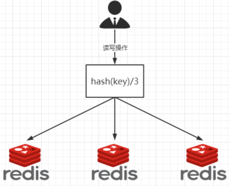
2 亿条记录就是 2 亿个k,v，我们单机不行必须要分布式多机，假设有3台机器构成一个集群，用户每次读写操作都是根据公式：
hash(key) % N 个机器台数，计算出哈希值，用来决定数据映射到哪一个节点上。
优点：
简单粗暴，直接有效，只需要预估好数据规划好节点，例如 3 台、8 台、10 台，就能保证一段时间的数据支撑。使用 Hash 算法让固定的一部分请求落到同一台服务器上，这样每台服务器固定处理一部分请求（并维护这些请求的信息），起到负载均衡 + 分而治之的作用。
缺点：
原来规划好的节点，进行扩容或者缩容就比较麻烦了额，不管扩缩，每次数据变动导致节点有变动，映射关系需要重新进行计算，在服务器个数固定不变时没有问题，如果需要弹性扩容或故障停机的情况下，原来的取模公式就会发生变化：Hash(key)/3 会变成 Hash(key) /?。此时地址经过取余运算的结果将发生很大变化，根据公式获取的服务器也会变得不可控。
某个 redis 机器宕机了，由于台数数量变化，会导致 hash 取余全部数据重新洗牌。
-
一致性哈希算法
Ⅰ 背景
一致性哈希算法在1997年由麻省理工学院中提出的，设计目标是为了解决分布式缓存数据变动和映射问题，某个机器宕机了，分母数量改变了，自然取余数不 OK 了。
Ⅱ 能干吗
提出一致性 Hash 解决方案。 目的是当服务器个数发生变动时， 尽量减少影响客户端到服务器的映射关系
Ⅲ 三大步骤
-
算法构建一致性哈希环
一致性哈希环
一致性哈希算法必然有个 hash 函数并按照算法产生 hash 值，这个算法的所有可能哈希值会构成一个全量集，这个集合可以成为一个 hash 空间[0,2^32-1]，这个是一个线性空间，但是在算法中，我们通过适当的逻辑控制将它首尾相连(0 = 2^32),这样让它逻辑上形成了一个环形空间。
它也是按照使用取模的方法，前面笔记介绍的节点取模法是对节点（服务器）的数量进行取模。而一致性 Hash 算法是对 2^32 取模，简单来说，一致性 Hash 算法将整个哈希值空间组织成一个虚拟的圆环，如假设某哈希函数 H 的值空间为 0-2^32-1（即哈希值是一个 32 位无符号整形），整个哈希环如下图：整个空间按顺时针方向组织，圆环的正上方的点代表 0，0 点右侧的第一个点代表1，以此类推，2、3、4、……直到 2^32-1，也就是说0点左侧的第一个点代表 2^32-1， 0 和 2^32-1 在零点中方向重合，我们把这个由2^32个点组成的圆环称为 Hash 环。

-
服务器 IP 节点映射
节点映射
将集群中各个 IP 节点映射到环上的某一个位置。
将各个服务器使用Hash进行一个哈希，具体可以选择服务器的 IP 或主机名作为关键字进行哈希，这样每台机器就能确定其在哈希环上的位置。假如 4 个节点 NodeA、B、C、D，经过 IP 地址的哈希函数计算(hash(ip))，使用 IP 地址哈希后在环空间的位置如下：
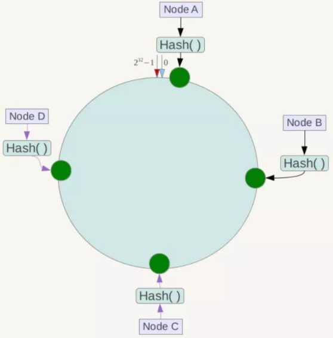
-
key 落到服务器的落键规则
当我们需要存储一个 kv 键值对时，首先计算 key 的 hash 值，hash(key)，将这个 key 使用相同的函数 Hash 计算出哈希值并确定此数据在环上的位置，从此位置沿环顺时针“行走”，第一台遇到的服务器就是其应该定位到的服务器，并将该键值对存储在该节点上。
如我们有 Object A、Object B、Object C、Object D 四个数据对象，经过哈希计算后，在环空间上的位置如下：根据一致性 Hash 算法，数据 A 会被定为到 Node A 上，B 被定为到 Node B 上，C 被定为到 Node C 上，D 被定为到 Node D 上。
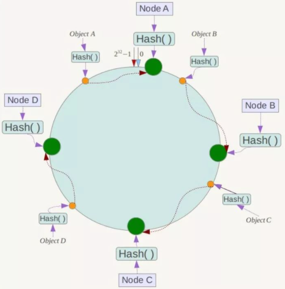
Ⅳ 优点
-
一致性哈希算法的容错性
假设 Node C 宕机，可以看到此时对象 A、B、D 不会受到影响，只有 C 对象被重定位到 Node D。一般的，在一致性 Hash 算法中，如果一台服务器不可用，则受影响的数据仅仅是此服务器到其环空间中前一台服务器（即沿着逆时针方向行走遇到的第一台服务器）之间数据，其它不会受到影响。简单说，就是 C 挂了，受到影响的只是 B、C 之间的数据，并且这些数据会转移到 D 进行存储。
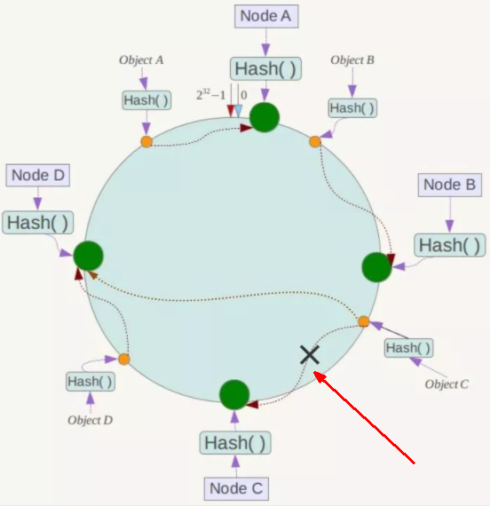
-
一致性哈希算法的扩展性
数据量增加了，需要增加一台节点 NodeX，X 的位置在 A 和 B 之间，那收到影响的也就是 A 到 X 之间的数据，重新把 A 到 X 的数据录入到 X 上即可，
不会导致 hash 取余全部数据重新洗牌。
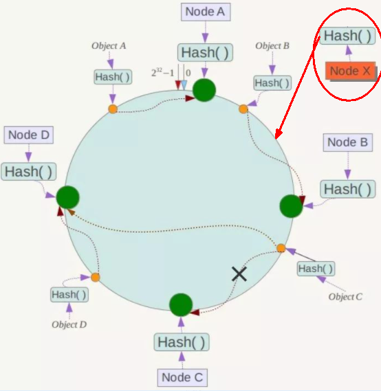
Ⅴ 缺点
一致性哈希算法的数据倾斜问题
一致性 Hash 算法在服务节点太少时，容易因为节点分布不均匀而造成数据倾斜（被缓存的对象大部分集中缓存在某一台服务器上）问题，
例如系统中只有两台服务器：
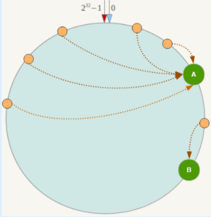
Ⅵ 总结
为了在节点数目发生改变时尽可能少的迁移数据
将所有的存储节点排列在收尾相接的 Hash 环上，每个 key 在计算 Hash 后会顺时针找到临近的存储节点存放。
而当有节点加入或退出时仅影响该节点在 Hash 环上顺时针相邻的后续节点。
优点
加入和删除节点只影响哈希环中顺时针方向的相邻的节点，对其他节点无影响。
缺点
数据的分布和节点的位置有关，因为这些节点不是均匀的分布在哈希环上的，所以数据在进行存储时达不到均匀分布的效果。
-
-
哈希槽分区
Ⅰ 背景
解决均匀分配的问题，在数据和节点之间又加入了一层，把这层称为哈希槽（slot），用于管理数据和节点之间的关系，现在就相当于节点上放的是槽，槽里放的是数据。
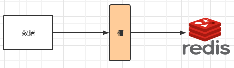
槽解决的是粒度问题，相当于把粒度变大了，这样便于数据移动。
哈希解决的是映射问题，使用 key 的哈希值来计算所在的槽，便于数据分配。
Ⅱ 多少个hash槽
一个集群只能有 16384 个槽，编号 0-16383（0-2^14-1）。这些槽会分配给集群中的所有主节点，分配策略没有要求。可以指定哪些编号的槽分配给哪个主节点。集群会记录节点和槽的对应关系。解决了节点和槽的关系后，接下来就需要对 key 求哈希值，然后对 16384 取余，余数是几 key 就落入对应的槽里。slot = CRC16(key) % 16384。以槽为单位移动数据，因为槽的数目是固定的，处理起来比较容易，这样数据移动问题就解决了。
Ⅲ 哈希槽计算
Redis 集群中内置了 16384 个哈希槽，redis 会根据节点数量大致均等的将哈希槽映射到不同的节点。当需要在 Redis 集群中放置一个 key-value 时，redis 先对 key 使用 crc16 算法算出一个结果，然后把结果对 16384 求余数，这样每个 key 都会对应一个编号在 0-16383 之间的哈希槽，也就是映射到某个节点上。如下代码，key之A 、B 在 Node2， key 之 C 落在 Node3 上
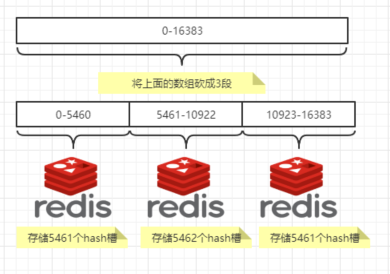
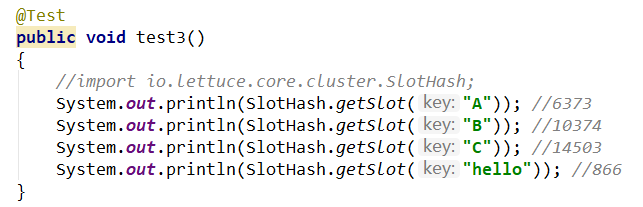
3主3从Redis集群扩缩容配置
3主3从redis集群配置
- run 6个容器
docker run \
--name redis-node-n \
--net host \
--privileged=true \
-v /ddocker/redis-share/redis-node-n:/data \
-d redis:6.0.8 \
--cluster-enabled yes \
--appendonly yes \
--port 638n
docker run --name redis-node-1 --net host --privileged=true -v /ddocker/redis-share/redis-node-1:/data -d redis:6.0.8 --cluster-enabled yes --appendonly yes --port 6381
docker run --name redis-node-2 --net host --privileged=true -v /ddocker/redis-share/redis-node-2:/data -d redis:6.0.8 --cluster-enabled yes --appendonly yes --port 6382
docker run --name redis-node-3 --net host --privileged=true -v /ddocker/redis-share/redis-node-3:/data -d redis:6.0.8 --cluster-enabled yes --appendonly yes --port 6383
docker run --name redis-node-4 --net host --privileged=true -v /ddocker/redis-share/redis-node-4:/data -d redis:6.0.8 --cluster-enabled yes --appendonly yes --port 6384
docker run --name redis-node-5 --net host --privileged=true -v /ddocker/redis-share/redis-node-5:/data -d redis:6.0.8 --cluster-enabled yes --appendonly yes --port 6385
docker run --name redis-node-6 --net host --privileged=true -v /ddocker/redis-share/redis-node-6:/data -d redis:6.0.8 --cluster-enabled yes --appendonly yes --port 6386
##注意:
## cluster-enabled | appendonly yes | port 638n 这几个是跟在redis:6.0.8后的
## net host模式不能用-p参数,会报错参数详解
| 参数 | 详解 |
|---|---|
| –net host | 使用宿主机的IP和端口，默认 |
| –cluster-enabled yes | 开启 redis 集群 |
| –appendonly yes | 开启持久化 |
| –port 6386 | redis 端口号 |
- 进入1号机，建立主从关系
docker exec -it redis-node-1 /bin/bash
redis-cli --cluster create 192.168.1.111:6381 192.168.1.111:6382 192.168.1.111:6383 192.168.1.111:6384 192.168.1.111:6385 192.168.1.111:6386 --cluster-replicas 1
## --cluster-replicas 1 表示为每个master创建一个slave节点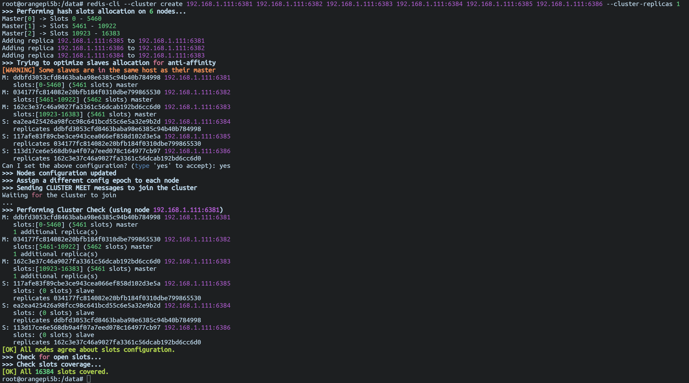
- 以 6281 作为切入点，查看集群状态
redis-cli -p 6381
cluster info
cluster nodes
#从下图可看到 1号机下面挂的4号, 2号机下面挂的5号, 3号机下面挂的6号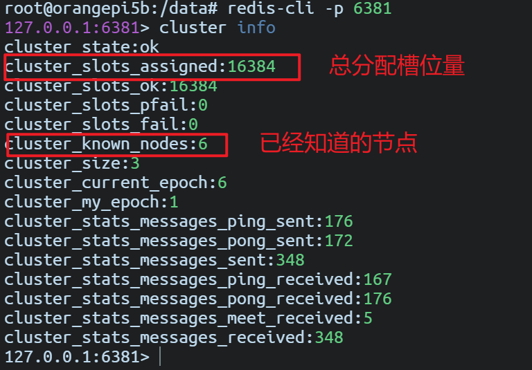
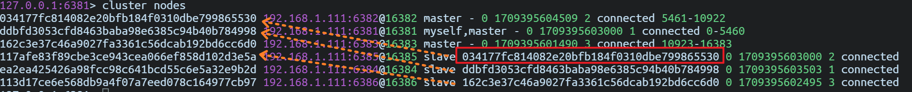